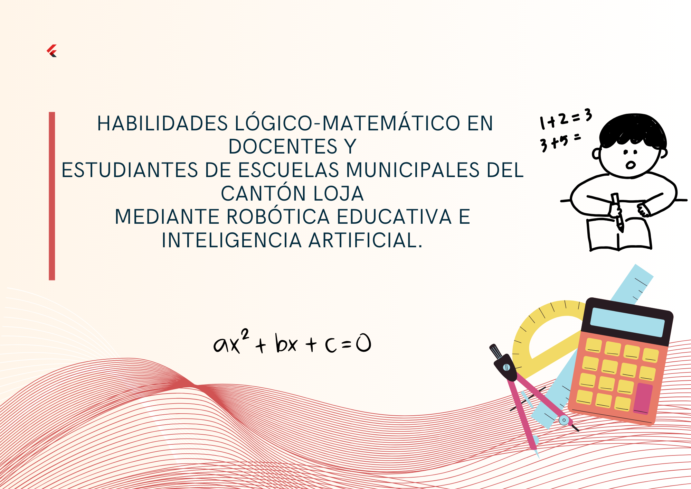

Objetivos
Objetivo Día 3: Programar acciones y comportamientos utilizando bloques de movimiento, apariencia y
sonido en MBlock para estructurar soluciones a problemas lógico-matemáticos mediante la
interacción dinámica entre objetos y escenarios.
Información
Este proyecto busca abordar esta problemática mediante la capacitación intensiva de docentes y el diseño de un currículo que incorpore la robótica educativa y la IA, no solo como herramientas de enseñanza, sino como medio para cultivar el razonamiento lógico-matemático en los estudiantes. A través de esta iniciativa, se espera no solo mejorar las competencias de los educadores, sino también empoderar a los estudiantes para que se conviertan en ciudadanos críticos y creativos, capaces de resolver problemas en un mundo en constante evolución.
Autores
- José Felipe Encalada Calva
- Jorge Javier Barrionuevo
- Kevin José Díaz Agila
- Alex Javier Cárdenas Gordillo